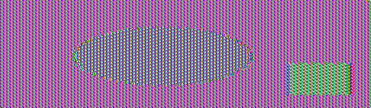
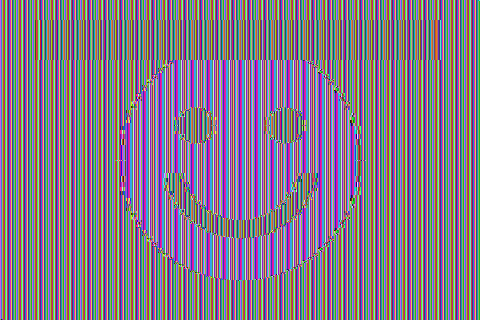
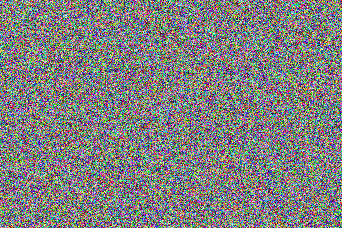

Lab: Crypto — Secret-Key Encryption (SEED Labs 2.0, Ubuntu 20.04)
Course: Information / Computer Security
Institution: FAST-NUCES Karachi
Submitted by: Umer Khan
Roll no: 23K-0798
Date: 12 September 2026
All seven tasks completed against the official SEED Labsetup files — the
lab's own ciphertext.txt, words.txt, pic_original.bmp, and the real
encryption_oracle compiled from the Labsetup's C++ source. Every number below
came out of running the code. ./run_all.sh reproduces it.
| Task | Answer |
|---|---|
| 1 | Key recovered; plaintext is a New York Times Oscars column. 95.4% of words verify against a dictionary |
| 2 | 7 cipher/mode pairs encrypted and round-tripped |
| 3 | ECB left 84 distinct blocks of 11,557 — the picture stays visible. CBC left all 11,557 |
| 4 | Block modes pad, stream modes do not; an exact fit still gets a whole extra block of 0x10 |
| 5 | One flipped bit damages: ECB 16 bytes · CBC 17 · CFB 17 · OFB 1 bit |
| 6.1 | Same key + same IV ⇒ byte-identical ciphertext |
| 6.2 | P2 = Order: Launch a missile! — recovered without the key |
| 6.3 | Bob's secret is Yes — recovered from the real oracle, one query per guess |
| 7 | Key = Syracuse########, found in 0.54 s |
Environment. Ubuntu container, OpenSSL 3.0.13, Python 3.11 with PyCryptodome, g++ 13.3 for the oracle. The SEED VM ships OpenSSL 1.1.1 — the one difference that matters is noted under Task 2.
A monoalphabetic substitution replaces each letter with a fixed other letter and changes nothing else. Word lengths, word boundaries, repeated-letter patterns and letter frequencies all survive — that is the whole weakness.
Counting first (freq.py on the lab's ciphertext.txt, 4759 characters,
800 words):
=== 1-gram (top 10 of 26 distinct) === === 2-gram === === 3-gram ===
1. n 488 12.41% english #1: e 1. yt 115 th 1. ytn 78 the
2. y 373 9.49% english #2: t 2. tn 89 he 2. vup 30 and
3. v 348 8.85% english #3: a 3. mu 74 in 3. mur 20 ing
The statistics line up almost rank for rank, which hands over the first letters
free: n → e, y → t, and since ytn is far and away the commonest trigram,
ytn → the, so t → h.
Hand-counting stalls after that, so solve_substitution.py finishes the job by
word-pattern matching. Every ciphertext word keeps its shape: mrrp can only
decrypt to a word of the form a-b-b-c. The program indexes the dictionary by that
shape and searches for a single letter mapping consistent with all 411 distinct
words at once, allowing a bounded number of words to go unmatched (proper nouns
are not in any dictionary).
A final refinement pass swaps pairs of key letters and keeps a swap only when
more of the text becomes real English. That step matters: the search alone left
j and x transposed — they appear in too few words to be pinned by the
constraints — which produced "xust seem ejtra long". One swap fixed it.
ciphertext: 4759 chars, 800 words, 411 distinct
solved in 45.0s, 1073152 search nodes, 23/26 letters pinned, 1 corrected by refinement
sanity check: 763/800 decrypted words are real English (95.4%)
The key
decryption cipher : abcdefghijklmnopqrstuvwxyz
plain : cfmypvbrlqxwiejdsgkhnazotu
encryption plain : abcdefghijklmnopqrstuvwxyz
cipher : vgapnbrtmosicuxejhqyzflkdw
The plaintext — a New York Times "Carpetbagger" column about the Academy Awards:
the oscars turn on sunday which seems about right after this long strange awards trip the bagger feels like a nonagenarian too
the awards race was bookended by the demise of harvey weinstein at its outset and the apparent implosion of his film company at the end and it was shaped by the emergence of metoo times up blackgown politics armcandy activism and a national conversation as brief and mad as a fever dream about whether there ought to be a president winfrey the season didnt just seem extra long it was extra long because the oscars were moved to the first weekend in march to avoid conflicting with the closing ceremony of the winter olympics thanks pyeongchang…
The full text is in results/task1_official.log. The 37 words that fail the
dictionary check are proper nouns and coinages — pyeongchang, winfrey,
metoo, blackgown — not decryption errors.
Conclusion. A 26-letter substitution key has 26! ≈ 4×10²⁶ possibilities, which sounds unbreakable and is not. Brute force is the wrong attack: the key stops mattering once the language leaks through. Security has to come from destroying that structure, not from a large key space.
openssl enc -aes-128-cbc -e -in plain.txt -out cipher.bin \
-K 00112233445566778899aabbccddeeff -iv 0102030405060708090a0b0c0d0e0f10
-K and -iv take raw hex, so no password derivation is involved — the key is
literally those 16 bytes.
| Cipher / mode | Ciphertext | First 16 bytes |
|---|---|---|
| aes-128-cbc | 48 | be34106b88d2cbca3841b72b9499dc6c |
| aes-128-ecb | 48 | 7873b7644794df44410a65bc2221eb4e |
| bf-cbc | 48 | 21b40e05baa9c5f0a24c23341b557bff |
| aes-256-cbc | 48 | 636fa262f2a2ac6235db0097e7b86ab2 |
| aes-128-cfb | 44 | eb0d40cd4d1c208b93dc8568951e7471 |
| aes-128-ofb | 44 | eb0d40cd4d1c208b93dc8568951e7471 |
| aes-128-ctr | 44 | eb0d40cd4d1c208b93dc8568951e7471 |
All seven decrypted back to the original.
E(IV) to begin; they differ only in how they generate
subsequent keystream blocks, so the same key and IV give the same first 16
bytes in all three.-bf-cbc fails
until you add -provider legacy -provider default; on the SEED VM's OpenSSL
1.1.1 the flags are unnecessary. Blowfish also has a 64-bit block, so its IV
is 8 bytes, not 16.The file is encrypted whole, then the original 54-byte BMP header is pasted back over the encrypted one so a viewer still renders it:
openssl enc -aes-128-ecb -e -in pic_original.bmp -out body.ecb -K $KEY
head -c 54 pic_original.bmp > pic_ecb.bmp
tail -c +55 body.ecb >> pic_ecb.bmp
| Original | Encrypted with ECB | Encrypted with CBC |
|---|---|---|
 |
||
| the plaintext picture | the picture is still there | indistinguishable from noise |
| Original | ECB | CBC |
|---|---|---|
 |
 |
| Picture | Mode | Blocks | Distinct blocks | Most common repeats |
|---|---|---|---|---|
lab's pic_original.bmp |
ECB | 11,557 | 84 | 8,390× |
lab's pic_original.bmp |
CBC | 11,557 | 11,557 | 1× |
| second picture | ECB | 28,800 | 141 | 17,160× |
| second picture | CBC | 28,800 | 28,800 | 1× |
ECB encrypts each block independently — Cᵢ = E(Pᵢ) — so equal plaintext blocks
produce equal ciphertext blocks. Every flat region of the image stays flat, just
recoloured, and the outline reads perfectly.
CBC chains each block into the next — Cᵢ = E(Pᵢ ⊕ Cᵢ₋₁) — so identical
plaintext blocks encrypt differently and the output is statistically
indistinguishable from noise. Re-compressing confirms it independently: the ECB
output still compresses to a fraction of the CBC output's size, because structure
is still in there.
Conclusion. ECB hides values, not patterns. It should not be used on anything longer than one block, no matter how strong the underlying cipher.
| Input bytes | aes-128-ecb | aes-128-cbc | aes-128-cfb | aes-128-ofb |
|---|---|---|---|---|
| 5 | 16 | 16 | 5 | 5 |
| 10 | 16 | 16 | 10 | 10 |
| 16 | 32 | 32 | 16 | 16 |
ECB and CBC must fill whole 16-byte blocks, so they pad. CFB and OFB use the cipher as a keystream generator and XOR byte by byte — there is nothing to fill, so ciphertext length equals plaintext length.
Decrypting with -nopad exposes it. PKCS#5/#7 appends N bytes each holding the
value N:
5 bytes of 'A':
000000 41 41 41 41 41 0b 0b 0b 0b 0b 0b 0b 0b 0b 0b 0b >AAAAA...........<
10 bytes of 'A':
000000 41 41 41 41 41 41 41 41 41 41 06 06 06 06 06 06 >AAAAAAAAAA......<
16 bytes of 'A':
000000 41 41 41 41 41 41 41 41 41 41 41 41 41 41 41 41 >AAAAAAAAAAAAAAAA<
000010 10 10 10 10 10 10 10 10 10 10 10 10 10 10 10 10 >................<
11 bytes of 0x0b, 6 of 0x06, and — the case worth understanding — a whole
extra block of 16 × 0x10 when the plaintext already filled a block exactly.
Without that rule a message genuinely ending in a byte 0x01 could not be told
apart from a padded one; padding must always be present so it can always be
removed unambiguously.
A 1600-byte file encrypted in four modes; one bit flipped in byte 55 of each
ciphertext (offset 54, inside block 4); decrypted with -nopad.
| Mode | Bytes corrupted | Bits | Where |
|---|---|---|---|
| aes-128-ecb | 16 | 67 | block 3 only (bytes 48–63) |
| aes-128-cbc | 17 | 73 | all of block 3, plus 1 byte of block 4 (offset 70) |
| aes-128-cfb | 17 | 70 | 1 byte at offset 54, plus all of block 4 (bytes 64–79) |
| aes-128-ofb | 1 | 1 | offset 54 only |
Pᵢ = D(Cᵢ). The damaged block decrypts to garbage; every other block
is independent and untouched. Exactly one block lost.Pᵢ = D(Cᵢ) ⊕ Cᵢ₋₁. Block 3 is garbage for the same reason; block 4
uses the damaged C₃ only as an XOR mask, so the damage passes through
positionally — the same single bit, at offset 54 + 16 = 70.Pᵢ = Cᵢ ⊕ E(Cᵢ₋₁). Byte 54 loses just that bit, but the damaged
block then feeds the cipher and destroys all 16 bytes of block 4. The mirror
image of CBC.Practical reading. OFB and CTR limit damage on a noisy channel, but that same malleability is a security problem: an attacker who knows the plaintext can flip chosen bits of it undetectably. None of these modes provide integrity — that needs a MAC or an AEAD mode such as GCM.
same key, same IV (run1 vs run2): IDENTICAL
same key, IV+1 bit (run1 vs run3): different
run1 be34106b88d2cbca3841b72b9499dc6c420c8e68fc7f8899
run2 be34106b88d2cbca3841b72b9499dc6c420c8e68fc7f8899
run3 614d8bf57d51e788d22efe8b24498e7b98cd2bf8beaff10f
One bit of IV change alters the entire ciphertext. With the IV repeated, encryption becomes deterministic: an eavesdropper learns when the same message was sent twice without breaking AES at all. An IV must never repeat under one key.
In OFB/CFB/CTR the cipher generates a keystream that depends only on key and IV,
and C = P ⊕ KS. Reuse both and two messages share a keystream, which then
cancels:
C1 ⊕ C2 = (P1 ⊕ KS) ⊕ (P2 ⊕ KS) = P1 ⊕ P2 so P2 = C1 ⊕ P1 ⊕ C2
With the values from the lab manual:
P1 : This is a known message!
C1 : a469b1c502c1cab966965e50425438e1bb1b5f9037a4c159
C2 : bf73bcd3509299d566c35b5d450337e1bb175f903fafc159
recovered P2 : 'Order: Launch a missile!'
No key, no IV, no AES. This is the two-time pad, and it is the same mistake that broke WEP and Microsoft's PPTP.
The lab's follow-up question — what if OFB is replaced by CFB? Only the
first 16 bytes of P2 come out: Order: Launch a. In CFB the first keystream
block is E(IV), identical for both messages, so block 1 cancels exactly as
before. From block 2 onward CFB derives its keystream from the previous
ciphertext block, which differs between the two messages, so the keystreams
diverge and nothing beyond the first block is revealed. In OFB the keystream
depends only on key and IV, never on the data, so the whole 24 bytes come out.
Unique is not enough for CBC; the IV must also be unpredictable. CBC computes
C₁ = E(P₁ ⊕ IV) and E is deterministic — so an attacker who chooses a
plaintext and knows the IV it will get can force the cipher's input to any
value they like.
Bob encrypts his secret with IV1, giving C = E(pad(S) ⊕ IV1), then offers to
encrypt the attacker's message with IV2 — which he announces. So send
Q = IV2 ⊕ IV1 ⊕ pad("Yes")
and Bob computes E(Q ⊕ IV2) = E(IV1 ⊕ pad("Yes")). Equal to C ⟹ the secret
was "Yes".
The Labsetup ships the oracle as C++ (encryption_oracle/known_iv.cpp); it was
compiled and attacked directly, which is equivalent to nc 10.9.0.80 3000 on the
lab network:
$ g++ -std=c++17 -o known_iv known_iv.cpp -lcrypto
$ python3 task6.3_attack_oracle.py --cmd ./known_iv
Bob's ciphertext : 5fb6241cfe1c401246801b9248fe2950
IV he used (IV1) : 657e150f53bd3b7475304c3bffa1fccd
testing "Yes"
next IV (IV2) : 90b2e44653bd3b7475304c3bffa1fccd
my plaintext Q : aca982440d0d0d0d0d0d0d0d0d0d0d0d = IV2 xor IV1 xor pad("Yes")
Bob returned : 5fb6241cfe1c401246801b9248fe2950 <-- MATCHES Bob's ciphertext
testing "No"
next IV (IV2) : 9a65b19d53bd3b7475304c3bffa1fccd
my plaintext Q : b174aa9c0e0e0e0e0e0e0e0e0e0e0e0e = IV2 xor IV1 xor pad("No")
Bob returned : d79160dd4df89a235c7c5d773270e423 no match
Bob's secret message is "Yes".
Note the guess must be the padded block — "Yes" plus 13 × 0x0d — because
that is what the cipher actually consumed. Note also the IVs: only the first four
bytes change between queries (657e150f… → 90b2e446…, same tail). The oracle
advances the IV by adding a rand() to its first 8 bytes, which is exactly the
kind of counter-like generation that makes an IV predictable.
This is the flaw behind the BEAST attack on TLS 1.0, which chained each record's IV from the previous record and so made it predictable. TLS 1.1 fixed it by giving every record a fresh random IV.
The key is an English word shorter than 16 characters, padded to 16 bytes with
# (0x23). The nominal key space is 2¹²⁸; the real one is the size of a
dictionary.
Plaintext : This is a top secret. (exactly 21 characters)
Ciphertext : 764aa26b55a4da654df6b19e4bce00f4ed05e09346fb0e762583cb7da2ac93a2
IV : aabbccddeeff00998877665544332211
Cipher : aes-128-cbc
Dictionary : the Labsetup's words.txt (25,143 words; 25,111 short enough)
KEY FOUND: 'Syracuse'
as 16 bytes : b'Syracuse########'
as hex : 53797261637573652323232323232323
66830 keys tried in 0.54s
Half a second in single-threaded Python. Two details matter: the plaintext is
exactly 21 characters, so echo -n is required — a trailing newline changes the
padding and nothing will ever match; and only the first ciphertext block needs
computing per candidate, since one block already identifies the key.
Conclusion. Key length is not key strength. A 128-bit key drawn from a 25,000-word dictionary carries about 15 bits of entropy. Keys must be generated randomly, or derived from a passphrase through a deliberately slow KDF — PBKDF2, bcrypt, scrypt, Argon2 — so that every guess costs the attacker real time.
./run_all.sh # every task against the files in Files/
Against the official Labsetup data (Files/official/, copied from the SEED Labs
repository):
# Task 1
python3 task1_frequency_analysis/solve_substitution.py Files/official/ciphertext.txt \
--dict Files/words.txt --budget 45
# Task 3
bash task3_ecb_vs_cbc/task3.sh ../Files/official/pic_original.bmp
# Task 6.2
python3 task6_iv/task6.2_keystream_reuse.py --p1 "This is a known message!" \
--c1 a469b1c502c1cab966965e50425438e1bb1b5f9037a4c159 \
--c2 bf73bcd3509299d566c35b5d450337e1bb175f903fafc159
# Task 6.3 - against the lab's Docker oracle, or a local build of it
python3 task6_iv/task6.3_attack_oracle.py --host 10.9.0.80 --port 3000
python3 task6_iv/task6.3_attack_oracle.py --cmd ./known_iv
# Task 7
python3 task7_bruteforce/task7_bruteforce.py --plaintext "This is a top secret." \
--ciphertext 764aa26b55a4da654df6b19e4bce00f4ed05e09346fb0e762583cb7da2ac93a2 \
--iv aabbccddeeff00998877665544332211 --words Files/official/words.txt
Captured output of every run is in results/, with the official-data runs named
*_official.log.
Files/ generated inputs, plus official/ from the SEED repo
task1_frequency_analysis/ freq.py, make_ciphertext.py, solve_substitution.py
task2_ciphers/ task2.sh
task3_ecb_vs_cbc/ make_bmp.py, task3.sh
task4_padding/ task4.sh
task5_error_propagation/ task5.sh, corrupt.py, compare.py
task6_iv/ 6.1 shell, 6.2 python, 6.3 python (local Bob + real oracle)
task7_bruteforce/ task7_bruteforce.py
results/ captured output; *_official.log used the lab's own files
report/ figures and the submission PDF